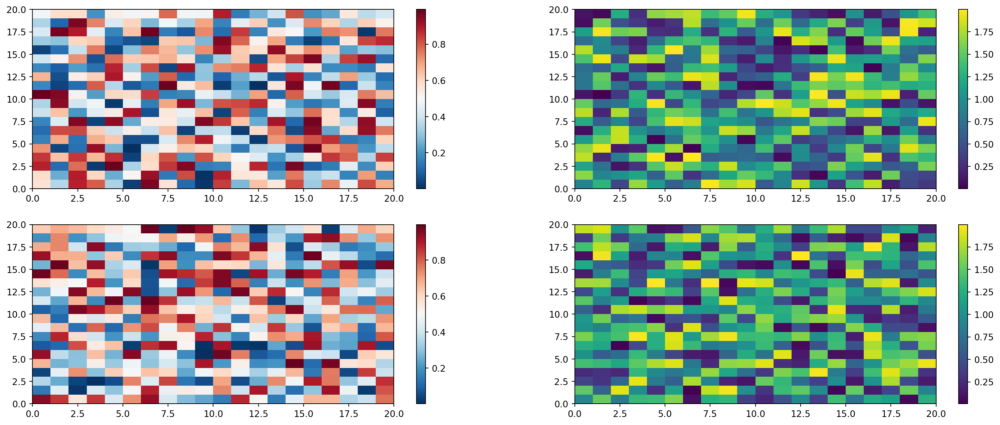

Code
1 + 12Boi
Knuth says always be literate [@knuth1984].
See Figure 1 in Section 6 for a demonstration of a simple plot.
See Equation 1 to better understand standard deviation.
s = \sqrt{\frac{1}{N-1} \sum_{i=1}^N (x_i - \overline{x})^2} \tag{1}
Colorbars indicate the quantitative extent of image data. Placing in a figure is non-trivial because room needs to be made for them. The simplest case is just attaching a colorbar to each axes:1.
import matplotlib.pyplot as plt
import numpy as np
fig, axs = plt.subplots(2, 2)
fig.set_size_inches(20, 8)
cmaps = ['RdBu_r', 'viridis']
for col in range(2):
for row in range(2):
ax = axs[row, col]
pcm = ax.pcolormesh(
np.random.random((20, 20)) * (col + 1),
cmap=cmaps[col]
)
fig.colorbar(pcm, ax=ax)
plt.show()
See the Matplotlib Gallery to explore colorbars further↩︎